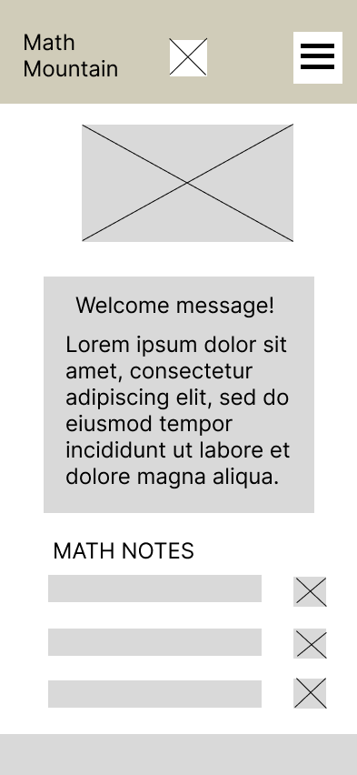
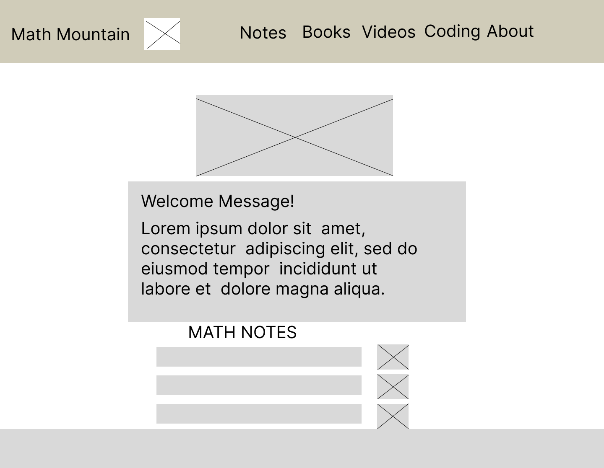

Site Name
Math Mountain
I chose the name "Math Mountain" because learning math has felt like climbing a mountain for me—something that seemed impossible in high school but now represents a challenge I'm actively conquering. The mountain symbolizes the journey from struggling at the base to reaching new peaks of understanding. Each topic mastered is another step higher on the climb.
Optional domain: mathmountain.org or math-climb.com
Site Purpose
Math Mountain serves as a free, interactive learning hub documenting my personal journey from struggling with math in high school to embracing it as an adult software developer. The site provides:
- Curated video lectures from Professor Leonard and Khan Academy, organized by subject (Pre-Calculus, Calculus)
- My personal notes from each lesson with mini-lessons for key topics
- Interactive JavaScript features allowing visitors to add their own notes and upload photos of handwritten work
- Honest textbook and workbook reviews based on my daily practice routine
- Code examples showing how mathematical concepts apply to programming
- A collaborative space where others can learn alongside me for free
This site bridges the gap between struggling students and accessible math education, proving that it's never too late to improve at subjects that once seemed impossible.
Target Audience Scenarios
Scenario 1: Adult Learner Returning to Math
Question: "I failed algebra in high school and now I need calculus for my computer science degree. Where do I even start, and what resources actually work?"
Answer: The site provides a clear learning path starting with Pre-Calculus 1.1 (Algebra Review), embedded video lectures that explain concepts clearly, and my personal notes showing exactly where I struggled and what helped me understand. Textbook reviews guide you to the best practice materials.
Scenario 2: Software Developer Wanting Math Fundamentals
Question: "How does the math I'm learning actually apply to programming? I need to see practical examples, not just theory."
Answer: The Resources section includes code examples implementing mathematical concepts in Python and JavaScript, showing direct connections between calculus, algebra, and real development work like algorithms and data visualization.
Scenario 3: Student Looking for Study Materials
Question: "Which textbook should I buy for self-study? I don't want to waste money on something that doesn't explain things well."
Answer: The Textbook Reviews page provides honest assessments of books I'm actively using, including what works, what doesn't, difficulty level, and whether they're worth the price for self-learners.
Color Schema
Primary: Deep Blue
#1E3A8A
Used for: Main headings, navigation bar, footer background
Secondary: Sky Blue
#60A5FA
Used for: Links, buttons, accent elements, hover states
Accent 1: Warm Orange
#F59E0B
Used for: Call-to-action buttons, highlights, important notes
Accent 2: Warm Red
#E83F6F
Used for: Accent sections, alert messages, emphasis areas
Text: Dark Gray
#1F2937
Used for: Body text, paragraphs, standard content
Background: Light Gray
#F3F4F6
Used for: Page background, card backgrounds, section dividers
Typography
Merriweather (Headings)
Font Family: Merriweather (serif)
Weights: 400 (regular), 700 (bold)
Used for: All headings (H1, H2, H3), section titles, lesson titles
Why: Traditional serif font that conveys authority and academic credibility,
appropriate for educational content.
Roboto (Body Text)
Font Family: Roboto (sans-serif)
Weights: 300 (light), 400 (regular), 500 (medium)
Used for: All body text, paragraphs, lists, navigation links
Why: Highly readable sans-serif optimized for screens, maintains clarity
in long-form content and mathematical notation.
Sample: The quadratic formula is x = (-b ± √(b²-4ac)) / 2a. This fundamental equation helps solve second-degree polynomial equations and appears frequently in calculus applications.
Courier New (Code)
Font Family: Courier New (monospace)
Weight: 400 (regular)
Used for: Code examples, mathematical expressions in programming context
Why: Monospaced font ensures proper alignment for code snippets and formulas.
def calculate_slope(x1, y1, x2, y2):
return (y2 - y1) / (x2 - x1)
Wireframes
Home Page - Mobile View

Mobile: Single column, stacked layout. Hamburger menu for navigation. Hero with mountain background graphic. Cards display vertically.
Home Page - Desktop View

Desktop: Horizontal navigation. Larger hero section with mountain background. Three-column card layout. Full footer with multiple sections.